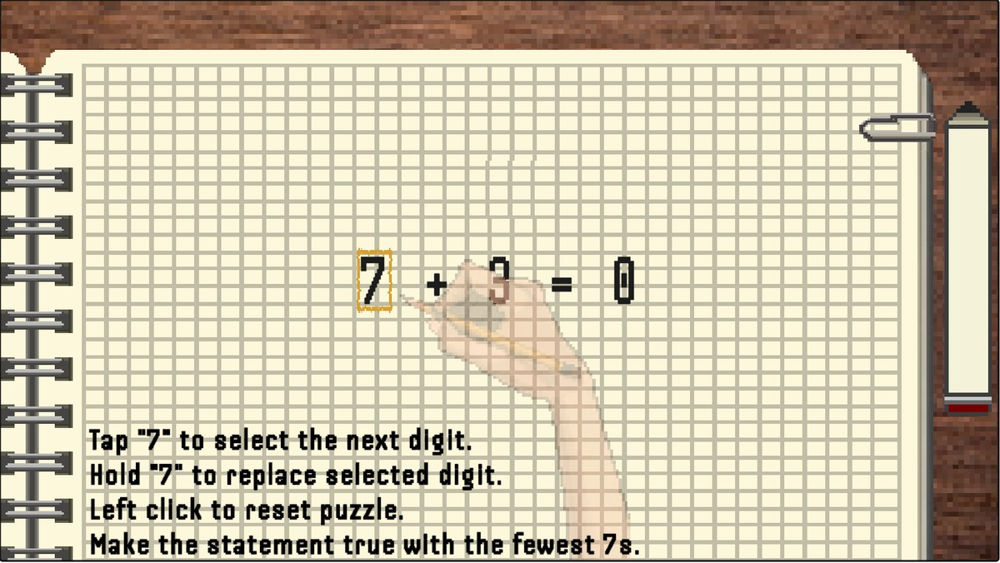
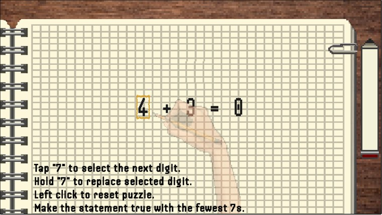
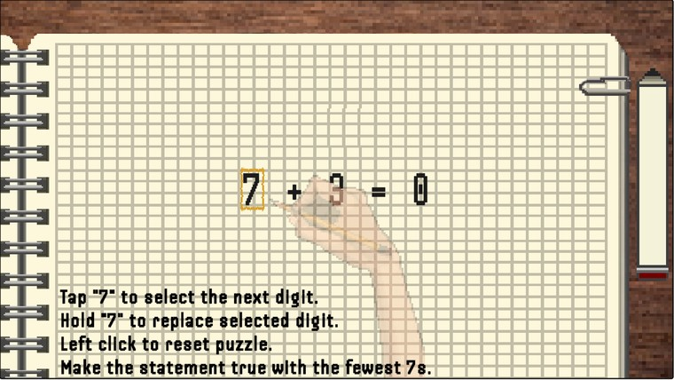

The Answer is 7! · Art, UI and design
One key, two inputs
A notebook puzzle game where the only key you can press is 7.

- Problem
- With a single button, the player has to learn two actions from the same key, moving and writing, without a tutorial getting in the way.
- My role
- Art, UI and design lead. Visual assets, UI, scene composition, the design document and the itch.io build.
- What I built
- A hand-drawn notebook interface where a pencil gauge fills as you hold 7, so the difference between a tap and a hold is something you can see.
- Scope
- 16 hours over two days. Timers, punishment and menus were cut so the core hold stayed readable.
Context
Build meaningful play out of one button
That was the brief for the Sheridan Warm-up Game Jam in May 2026. Our answer was an equation puzzle where 7 is the only key. You make each statement true by writing 7s into it, and the solution that uses the fewest 7s is the one that counts. Later puzzles ask you to write a 7 over the = sign itself. The released version runs 30 puzzles.
Process
01Timing is the second button
One key only gives you one action unless time does the rest. A press under half a second moves the cursor to the next slot. Holding for half a second or longer writes a 7 into the selected slot. When and how long you press became the whole control scheme.
02Making the hold visible
A half-second threshold is easy to miss if you cannot see it. I drew the gauge as a pencil whose body fills with graphite from the bottom up while you hold 7, then stays full for a moment before resetting. The selected slot gets a hand-drawn pencil outline, and a pencil pointer taps on a short press and shakes while you hold, so both inputs answer back the moment you use them.
Every input sound was planned as pencil on paper to match, and there is no fail state. A wrong answer simply does not advance, and a left click resets the puzzle, so players learn the two inputs by trying them.


03Scoping 16 hours
With 16 hours, deciding what not to build was as much design as anything else.
- Cut per-question time limits, wrong-answer punishment, a full menu and options, multiple music tracks, a story and ending, mobile UI
- Kept the 0.5 second hold with a visible gauge, multi-line equations, the = to 7 puzzles, three scenes, pencil-themed visuals and audio, a WebGL build
Outcome
Shipped in the jam window, then finished after it
The game went up on itch.io as a playable WebGL build at the end of the jam, with three scenes: an intro where pressing 7 starts the game, a loading scene with a sliding title, and the notebook itself.
The jam build was not the last one. I came back to it and released 1.0: 30 puzzles, audio levels rebalanced across the game, a cleaned-up title screen, a fix for a crash on the clear screen, pressing 7 on the ending to return to the title, and the puzzle rule stated plainly instead of left to be inferred, since players had no way of knowing that the fewest 7s is what counts.
What I'd change
- Build for the web from day one. We left the WebGL build to the end, which is where the last-minute problems were.
- Agree on puzzle count and difficulty early. Without a set curve, the puzzles were sized as we went.
- Keep shared assets machine-independent. The FMOD setup pointed at one person's local path, which made testing on other machines harder.
Materials